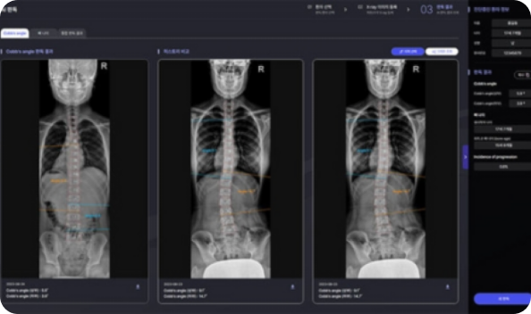

개념 학습
지능 에이전트의 특성
지능 에이전트의 특성은 자율성, 협력성, 목표 지향성으로 구분할 수 있다. 이러한 특성은 지능 에이전트가 인간의 지능과
행동을 모방하여 인간처럼 목표를 가지고 스스로 행동하며 협력하여 목표를 달성할 수 있음을 의미한다.
지능 에이전트의 특성
자율성은 일부 또는 모든 작업을 자동화하여 인간의 개입 없이 독립적으로 수행하는 특성이다. 이는 지능 에이전트가 자율적으로 환경을 인식하고 학습하여 자체적으로 의사 결정을 내리며 행동할 수 있다는 것을 의미한다.
자율성은 다양한 환경에서 작업을 수행하는 데 필수적이다.
자율주행 자동차
최적의 경로를 계획하여 자율적으로 이동한다.
협력성은 다른 에이전트나 사람들과 상호 작용하여 공동으로 작업을 수행하는 특성이다.
다른 에이전트와 협력하여 혼자 해결하기 힘든 복잡한 문제를 해결할 수 있다.
군집 드론
드론의 위치와 환경 조건을 공유하며 협력한다.
목표 지향성은 지능 에이전트가 행동하고 결정하는 데 방향과 의미를 부여하는 특성이다.
효율적으로 작업을 수행하고 학습을 관리, 의사 결정을 내리는 데 필수적인 요소이다.

인공지능 의료 진단 시스템
의사의 보조 역할을 하면서 정확한 진단을 목표로 데이터 분석을 수행한다.